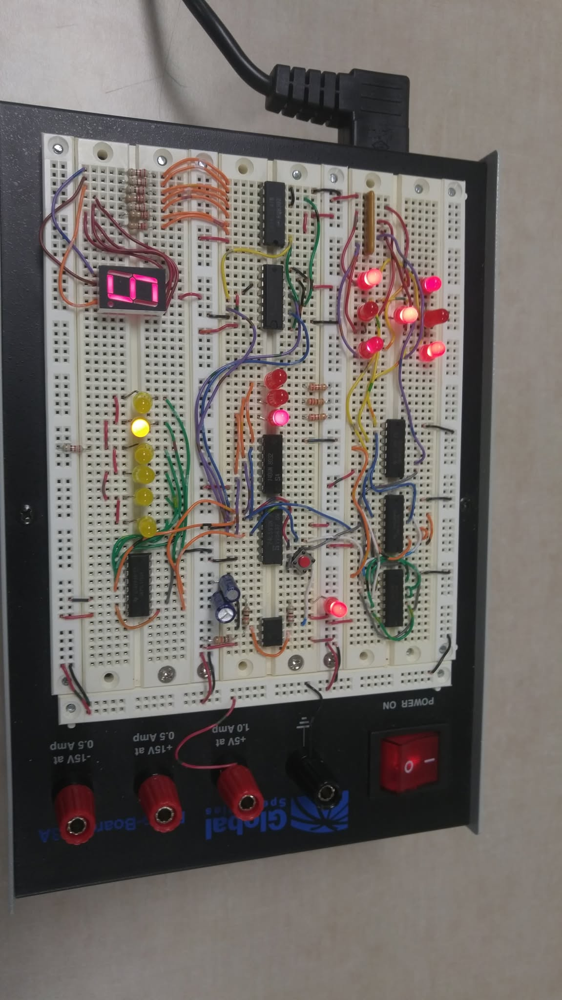
Digital logic | Space detection
Parking lot place finder
Logic circuitA 16-space logic circuit, from occupancy inputs to the next available bay.
27 images / 3 videos
View case studyElectrical systems, automation and embedded prototypes. Original evidence, engineering decisions and clearly defined results.
19 projects and studies

Digital logic | Space detection
A 16-space logic circuit, from occupancy inputs to the next available bay.
27 images / 3 videos
View case study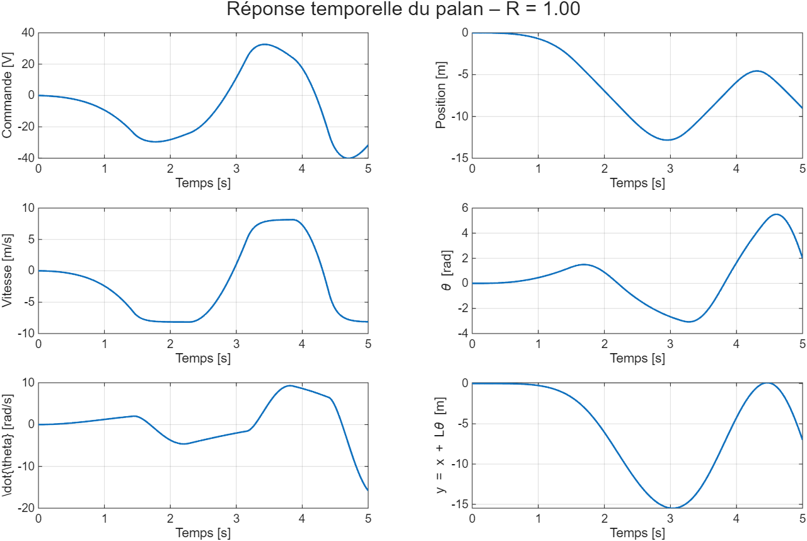
Motion control | Suspended loads
Model identification, pole placement, LQR and estimation for a suspended load.
14 images
View case study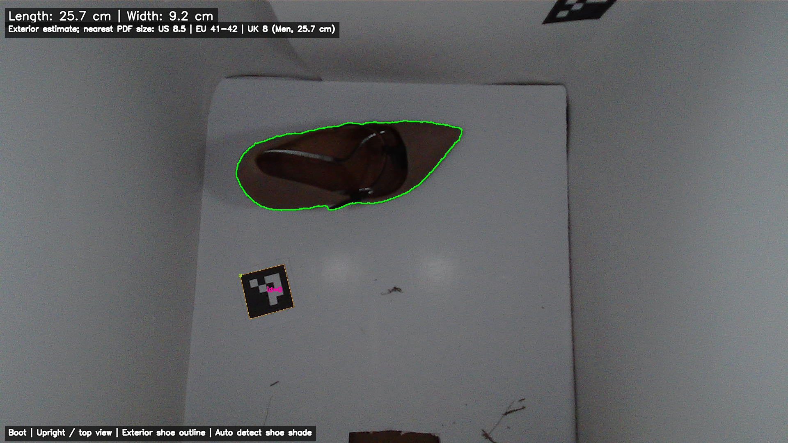
Vision | Measurement
ArUco calibration, contour processing and a desktop measurement workflow.
12 images
View case study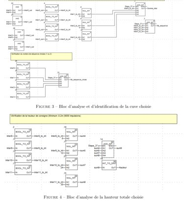
Industrial automation | Sequence control
Mode management, sequence control and interlocks for a two-axis crane moving between treatment tanks.
8 images
View case study
Microcontrollers | Interactive audio
An embedded note game combining a display, timing, communication and audio output.
2 images
View case study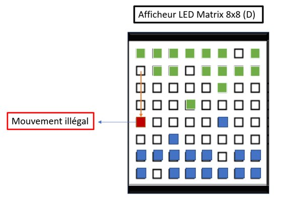
Mechatronics | Motion control
An 8 x 8 sensing board, LED feedback and three-axis motion with an electromagnet.
13 images
View case study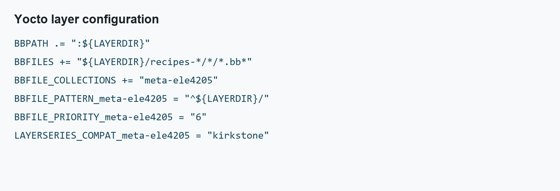
Embedded Linux | Target images
A Yocto layer, board images and an embedded Linux development environment.
1 images
View case study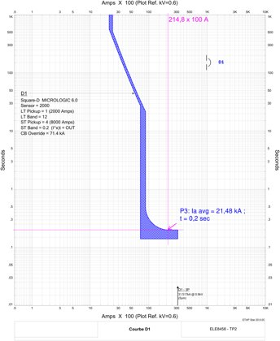
Electrical protection | Incident energy
Arc-current inputs, incident-energy calculations and time-current protection curves.
21 images
View case study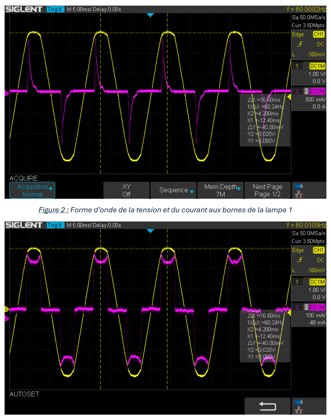
Power quality | Transformer connections
LED-load measurements, waveform distortion and three-phase transformer configurations.
61 images / 2 videos
View case study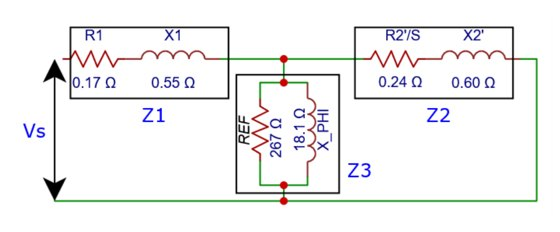
Electrical machines | Load analysis
Load estimates, an induction-motor equivalent circuit and transformer connection exercises.
5 images
View case study
Signal processing | Spectral analysis
Windowing, chirps, correlation and sampling explored through saved notebook outputs.
6 images
View case study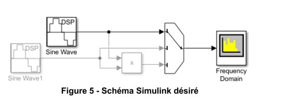
Communication systems | Error correction
Signal analysis, Simulink models and a Hamming 7,4 decoding workflow.
1 images
View case study
Embedded interfaces | Sampling
C and ARM assembly work around timers, ADC, DAC, DMA and display data.
2 images
View case study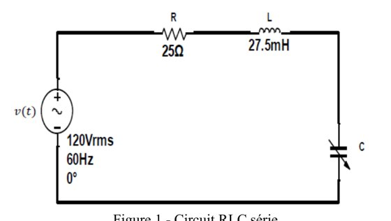
Electrotechnics | Circuit response
Series and parallel RLC behavior compared through diagrams and lab measurements.
4 images
View case study
Motion control | System identification
Step-response reasoning and graphical identification of a servomotor model.
2 images
View case study
Power networks | Load flow
Admittance modeling, numerical power flow and voltage behavior in a three-bus exercise.
4 images
View case study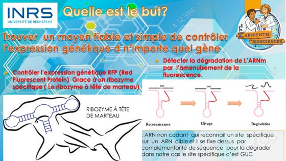
Biosciences | Experimental methods
An experimental research question involving gene expression, gel images and fluorescence.
4 images
View case studyPower electronics | Reliability
A high-level overview of power-system reliability and engineering documentation work.
Public overview / no internal media
View case studyHydro-Quebec | Summer 2024
Excel and VBA data organization, technical information and onboarding documentation.
Public overview / no internal media
View case studyNo matching projects.